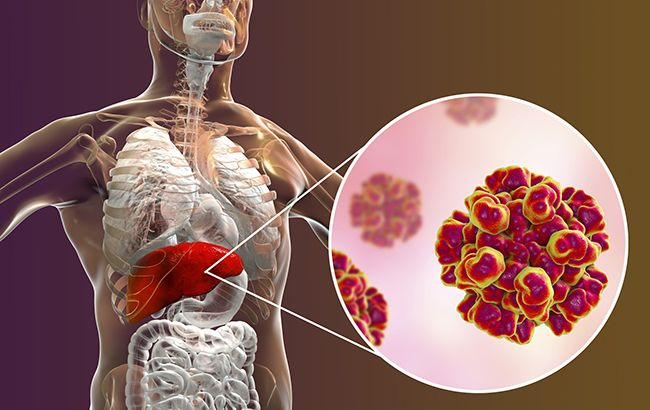

Гепати́т А (іноді Вірусний гепатит A, застарілі назви: хвороба Боткіна, яка використовувалась виключно в СРСР[2], інфекційний гепатит, епідемічний гепатит) — гостра інфекційна хвороба з ураженням печінки, яка передається фекально-оральним механізмом. Хвороба поширена в усіх країнах світу[3], але через наявність високоефективної вакцини у багатьох країнах розвиненої медицини захворюваність зведена практично нанівець. Переважно у країнах третього світу хворіють діти та молоді люди. У багатьох випадках захворювання перебігає майже або зовсім безсимптомно, особливо у дітей та молодих людей.[4] Інкубаційний період складає від двох до шести тижнів.[5] Якщо симптоми з'являються, вони, як правило, зберігаються протягом 1-4 тижнів у неускладнених випадках. Спостерігають нетривалу гарячку у перші 3 дні хвороби, слабкість, зниження апетиту, жовтяницю, в тяжких випадках — може бути блювання, біль у животі.[4] Гостра печінкова недостатність виникає казуїстично серед людей з фоновими тяжкими хворобами
